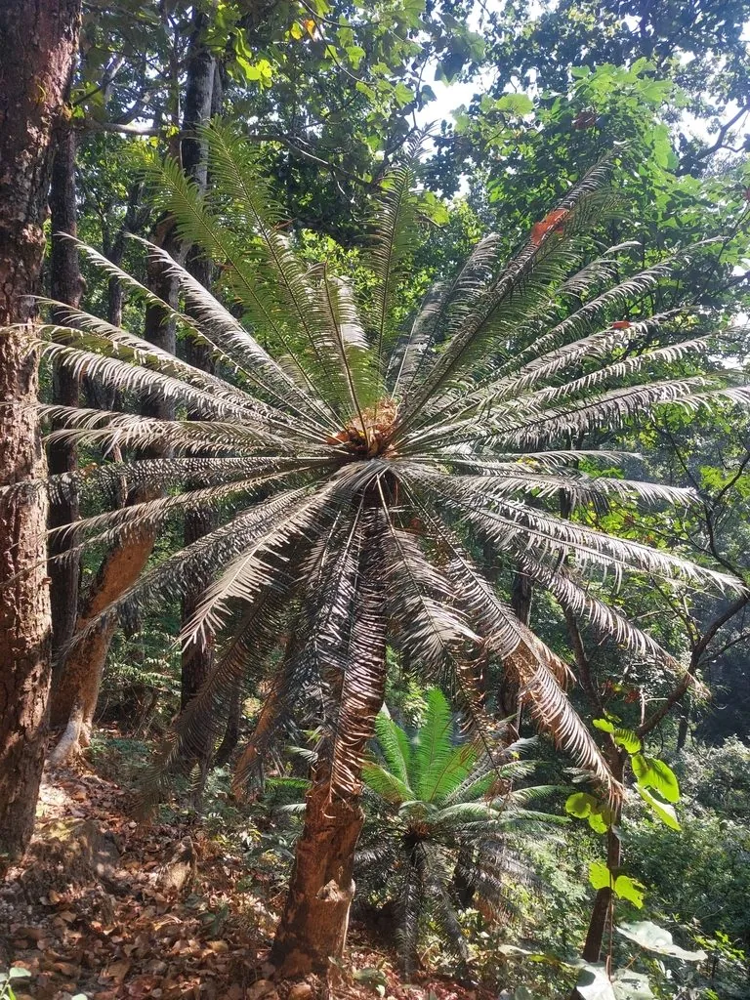

蕨类与裸子植物 · 植物界
篦齿苏铁 Cycas pectinata

篦齿苏铁的小叶排列如篦齿，茎干高大粗壮，是亚洲南部的大型苏铁，被列为国家一级重点保护野生植物。
- 分类
- 门裸子植物门纲苏铁纲目苏铁目科苏铁科属苏铁属
- 栖息环境
- 热带、亚热带低山丘陵的疏林与灌丛，喜温暖干燥、阳光充足
- 地理分布
- 中国云南、广西及印度、缅甸、泰国等地
- 保护级别
- IUCN 暂无评估；中国国家一级重点保护野生植物
物种志
篦齿苏铁是苏铁科大型常绿植物，茎干高可达 3–5 m，粗壮，表面密布鳞片状叶痕。大型羽状叶长达 2–3 m，小叶线形、坚硬，排列整齐如篦齿，深绿色，叶背有毛。雌雄异株，雄球花圆柱形，雌球花扁平，种子卵圆形，成熟时橙黄色。
篦齿苏铁分布于中国云南、广西及印度、缅甸、泰国等地，多生于热带、亚热带低山丘陵的疏林与灌丛中，喜温暖干燥、阳光充足的环境。它生长极慢，寿命长，主要靠种子繁殖。苏铁类对研究种子植物演化有重要价值；篦齿苏铁因茎干粗壮、叶形整齐，也常作为观赏植物栽培。由于野外采挖和生境破坏，野生资源稀少，被列为中国国家一级重点保护野生植物。
形态与习性
- 茎干高 3–5 m，粗壮
- 叶大型羽状复叶，小叶如篦齿
- 雌雄异株
- 种子卵圆形，成熟时橙黄
- 保护国家一级重点保护野生植物
趣味知识
- 篦齿苏铁的小叶排列整齐，像梳头的篦子齿，名字由此而来。
- 它的茎干可长到 3–5 m 高，是体型较大的苏铁。
- 篦齿苏铁野生资源稀少，被列为国家一级保护野生植物。